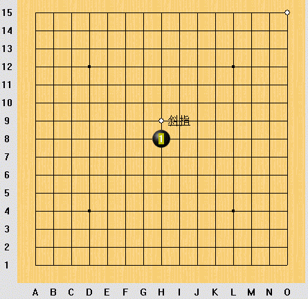

请问如何在LIB格式棋谱上加一些字
#1 请问如何在LIB格式棋谱上加一些字作者：news 发表时间：2006-9-18 8:40:34

如图，“斜指”是怎么弄上去的？
我在RENLIB下点了MARK不过不知道怎么弄了。
请高手指点一下哈
#2 Re:请问如何在LIB格式棋谱上加一些字作者：longfx 发表时间：2006-9-18 11:17:11
ctrl+鼠标左键#3 Re:请问如何在LIB格式棋谱上加一些字作者：news 发表时间：2006-9-22 17:48:26
楼上兄弟。ctrl+鼠标左键 确实可以加字，但只是电脑指定的A。B。C。D。。
我如果想加上自己的文字，如“败，胜”等，该怎么办呢？？
#4 Re:请问如何在LIB格式棋谱上加一些字作者：老菜鸟 发表时间：2006-10-2 16:10:38
不是电脑指定的ABCD啊，我可以打字的啊